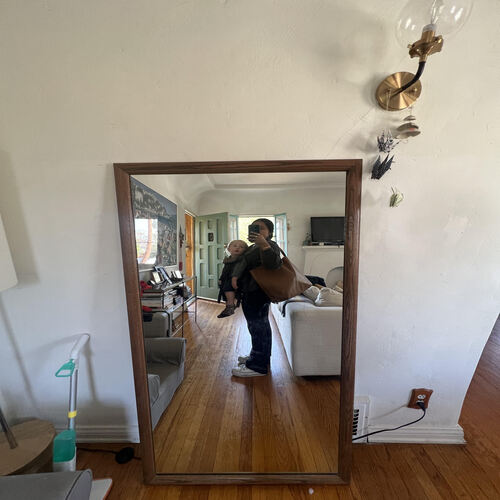

Yareliz Ramos
I am currently a sophmore at UCR. I am a full time student and part-time worker, currently working as a nanny and peer-educator in CHFY at UCR. I commute to University from Los Angeles, which is where I am located. Im currently a Political Science major, but will soon change into Bussness administration, accounting. I found my interest to be shifting these two years I have been attending UCR.
With my 2 jobs, I have developed many skills, such as responsibilty and multitasking. Working with kids of all ages, I have to be constantly making sure of others safety while also going on with the day. Specifically, with my job at UCR, my skills in technology has increased, since, I am teaching to freshmens in three different classes, this also leads to my public speaking skills developing more and more throughout time. I am willing to expand my knowledge and interest with different areas in my work place, school, interneships and many other environments.
Some personal fun facts about me: I like to go hiking, camping or even just walking in nature. I also enjoy the beach a lot during the summer,surfing/bougie boarding everyday is one of my biggest hobbies, last fun fact is I am a person that is overly organized with school/job work but not personal life.
Experience
Peer-Educator at UCR
• I have and currently am developing n environment for students in my class
• creating weekly lessons, uploading grades on CANVAS, assigning assignments and teaching during class
• Learned to multitask, leadership, open-mindness, and more
Nanny
• Resposibily for kids different age range with different familes (pick-up, feed, follow a routine, drop-off, drive to different areas park, school, museum etc.)
• I have learned to be responsisbly to a greater extent, patient, serious/playful, quick thinking and much more
Personal Assistant
• learned to follow rules, expectations, routine and follow through with others plans, thoughts and more
• I specifically walked dogs, drove to pick kids up, cooked, ran errands (USPS, Groceries, helped clean etc.)
• Constatnly had to check up with person but also meet their expectations all the time with little mistakes
• Social skills also expanded as I met new ordinary people during errands, met famous people as I sent out emails and contacted others and met people during traveling form different areas/backgrounds.
Education
Gertz-Ressler High School
University of California Riverside
Portfolio
